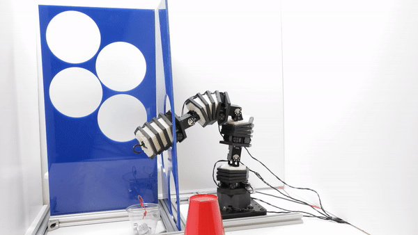

Soft-Rigid Hybrids
My current overarching research thrust is to develop robot systems that can operate with stronger safety guarantees in sensitive settings. Most work on this topic currently focuses on algorithmically guaranteed safety. I am also excited about this topic, and a number of my recent and upcoming papers focus on this theme. However, the basic physical properties of the robot ultimately provide constraints on what safety means and how strict the algorithm must be. Therefore, I am building robots that are designed with these algorithms in mind in order to maximize their effectiveness. The end goal is to create robots that, like humans, are not afraid of bumping into the world in unexpected ways. Ongoing work centers around the design of a novel class of soft-rigid hybrid systems that tightly integrates traditional engineering materials as well as materials to more closely mimic soft tissue. Examples of this include the serial soft-rigid robot below on this page, as well as the turtle robot displayed in the Biomimetics section.

Publications
- Z. J. Patterson, E. Sologuren, C. Della Santina, and D. Rus, “Design and Control of Modular Soft-Rigid Hybrid Manipulators with Self-Contact,” arXiv: arXiv:2408.09275. Link
- Z. J. Patterson, C. D. Santina, and D. Rus, “Modeling and Control of Intrinsically Elasticity Coupled Soft-Rigid Robots,” ICRA, May 2024. Link